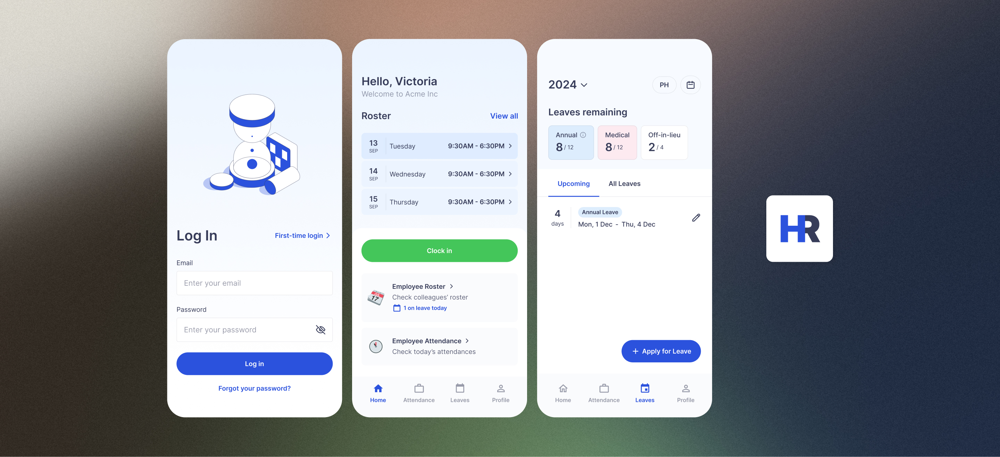
Streamlining Leave, Attendance, and Workforce Visibility
In a rapidly growing local company, HR processes relied on fragmented and manual workflows.
Employees applied for leave through WhatsApp, while managers and HR staff struggled to manage rosters, team capacity, and leave tracking without a centralised system.
As the company expanded and hired remote staff across China and the Philippines, these inefficiencies became harder to sustain, this was an opportunity to digitise and streamline HR operations.
I spoke with colleagues from 3 user groups to understand:
- what actions each user group took
- where breakdowns occurred
- what impact those breakdowns created
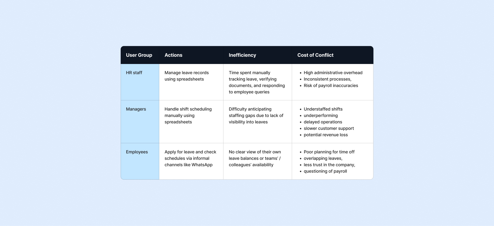
The issues could be converged into two themes:
Manual administrative overhead
HR spent 3 – 5 hours weekly tracking leave balances, verifying documents like MCs, had unnecessarily frequent back-and-forth communication with employees
Lack of visibility across teams
Employees had no clear view of their leave balance or colleagues' availability → last minute and/or overlapping leaves, managers struggling to anticipate staffing gaps.
How might we reduce manual workload and improve visibility of workforce availability across employees, managers, and HR?
To address the challenges, we first introduced a solution structured around two interfaces:
- Backend system (for HR staff & managers) — Used to manage employee records, track leave balances and history, assign rosters, and monitor attendance.
- Mobile app (for employees) — Used to check leave balances, apply for leave, view team rosters, and clock in and out. This provided employees with direct access to information and actions.
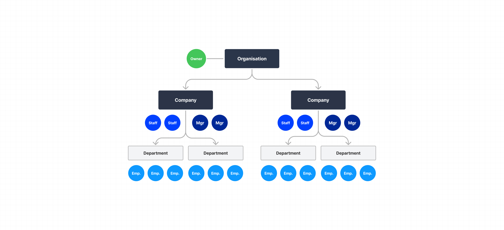
System structure and roles
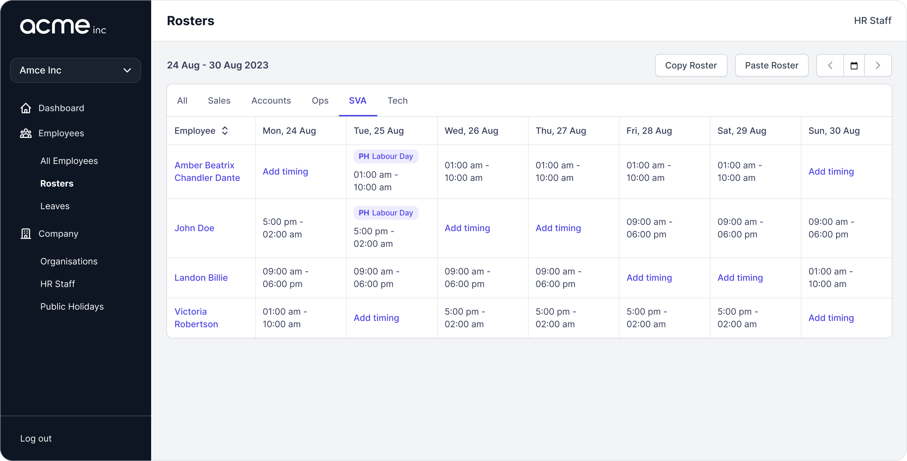
Roster setting for Managers
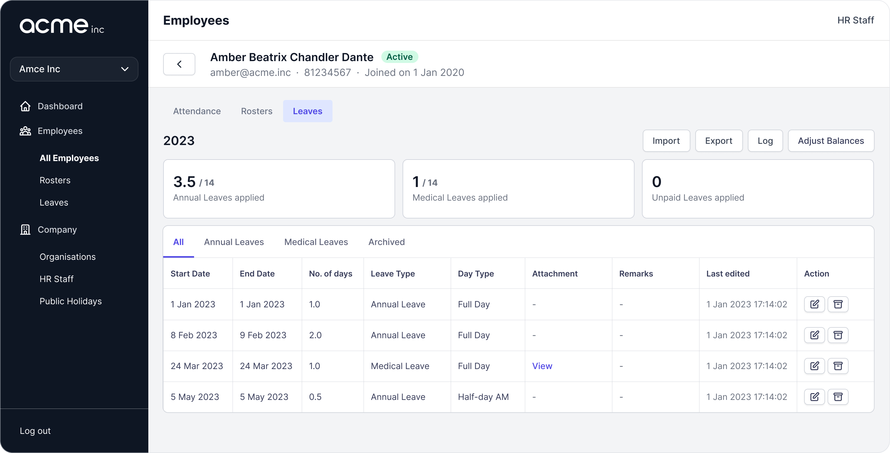
Employee's leave records and balances
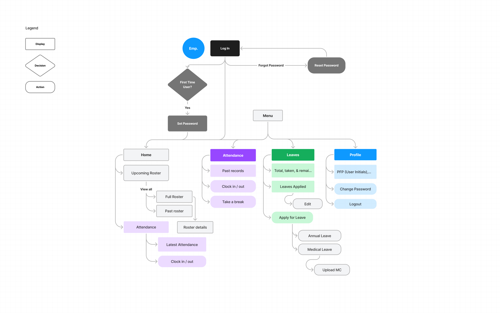
App site map
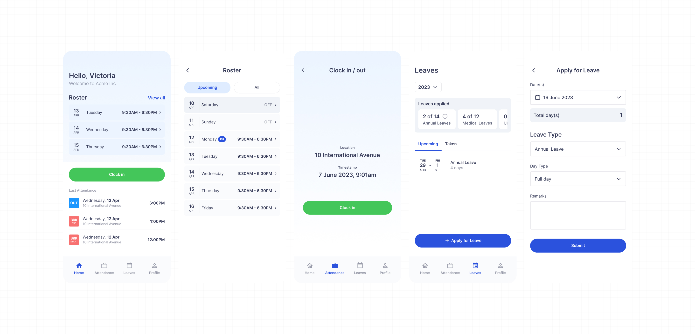
App for Employees: Home → Roster, Clock in / out, Leaves → Apply for Leave
This addressed more than half of the inefficiencies uncovered, however, through gathering feedback, we found opportunities to improve on the solution.
Improving team visibility
As leave applications shifted from WhatsApp to the app, team-wide visibility of absences was lost, and employees often forgot to inform colleagues after applying for leave.
To restore visibility, I introduced:
- home screen notifications highlighting how many team members are on leave each day
- a shared calendar showing colleagues' upcoming leaves and country-specific public holidays
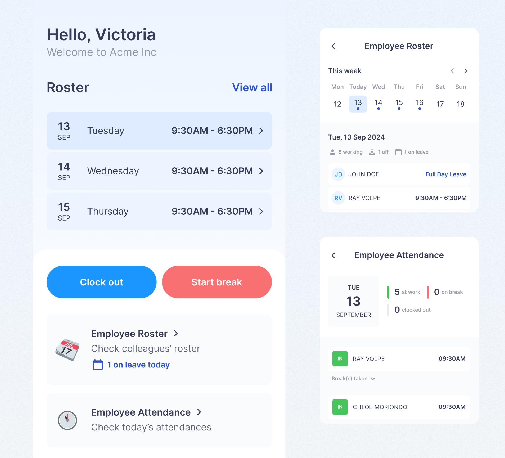
Home screen notifications indicating if team members are on leave
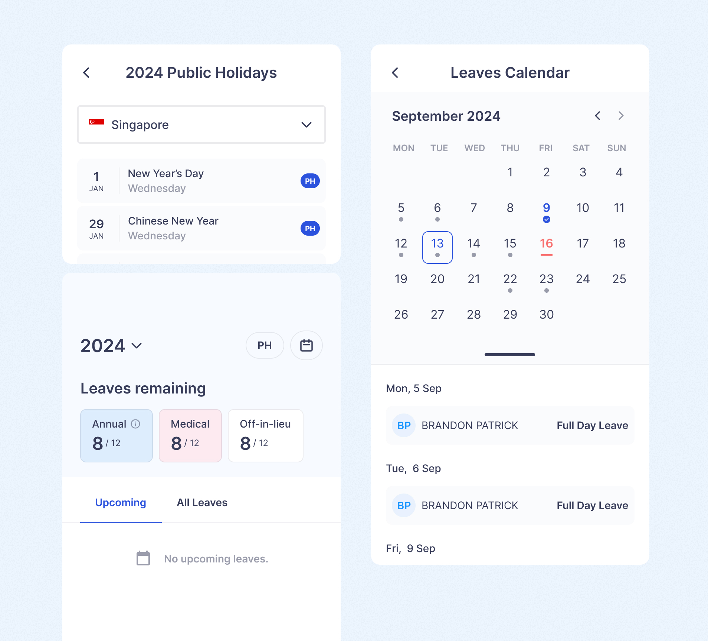
Leaves calendar for teams
Fully eliminating manual leave tracking
While standard leave types like annual and medical leave were easily managed in the system, HR still had to manually track more complex leave types such as Off-in-Lieu (OIL) due to system limitations.
To reduce this overhead, we introduced an OIL leave type with:
- automated logic for leave assignment based on worked public holidays and roster data
- built-in expiry rules since OIL is only valid for 3 months
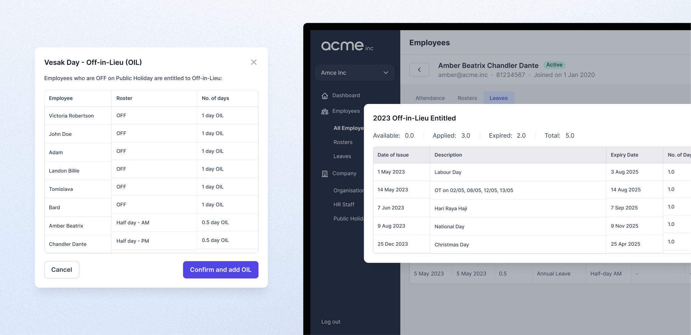
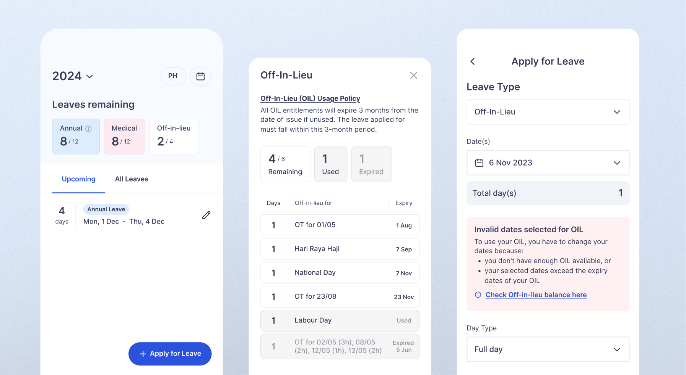
Preventing understaffing
While the system enabled managers to manage rosters and keep teams informed, staffing gaps still occurred when too many employees took leave during the same period.
We identified that leave management was unbounded, with no mechanism preventing staffing shortages before they happened.
Instead of introducing leave approvals which would increase managerial overhead and decision fatigue, we implemented a minimum headcount constraint, allowing managers to define the minimum staffing required each day.
- Once the threshold is reached, new leave applications are automatically blocked
- MCs and other exceptions can still be manually overridden by managers
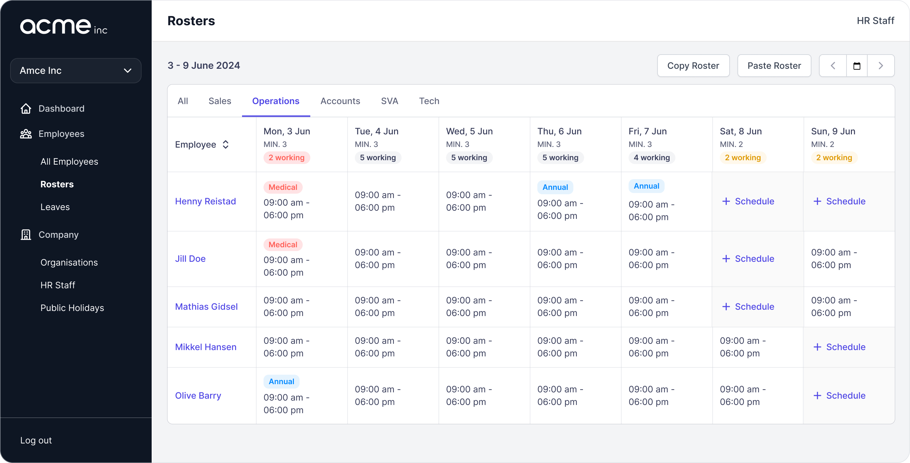
Improving attendance integrity
The initial version of the app used GPS-based clock-ins, allowing employees to mark attendance once they were within the office vicinity.
However, it was observed that some employees clocked in before physically reaching their workstation.
To improve attendance integrity, we introduced NFC-based clock-ins by placing NFC cards in the office, requiring employees to tap their device on-site in order to clock in.
GPS clock-in was retained as a fallback for remote employees, with system flags differentiating on-site and remote workers.
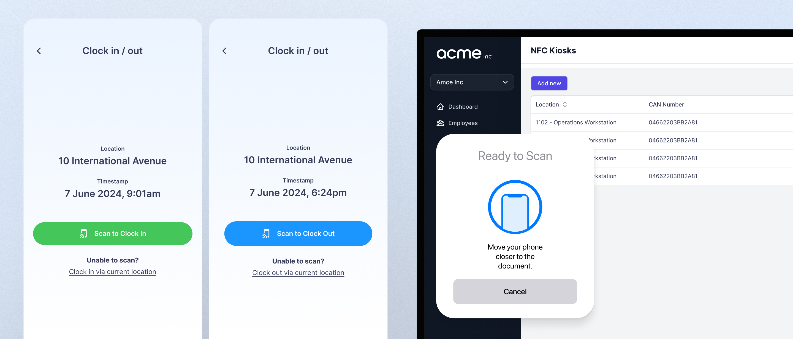
NFC Clock-ins
Reduced HR administrative workload
Less than half the time spent per month (up to 20hrs to <10hrs) was required for HR administrative work.
Improved employee autonomy
Employees no longer needed to contact HR to check leave balances
Better workforce visibility and reliable operations
Managers could better maintain staffing levels and avoid disruptions, teams gained awareness of colleagues' availability and upcoming absences
Lessons learnt:
- Visibility should be ambient, not effort-driven
Users shouldn't have to actively check multiple places to understand team availability. - The system should prevent operational issues, not just record them
Especially for staffing, the app should act as a constraint system, not just a tracking tool. - Digitising a workflow is not enough
The invisible systems of awareness that people rely on must also be preserved or redesigned
By shifting from simply "building features" to designing for visibility and control, the app evolved into a system that not only reduced manual work, but actively supported operational decision-making.